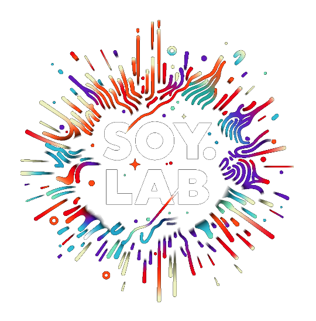

NEXT K-CORE AI CONNECT
AI를 사이에 두고,사람과 사람이 만나다.
2026.12.09–10
DDP 디자인랩 3층 디자인홀
16초 · 한 번 재생
작은 파스텔 점들이 모인 구체에서 점들이 SOYLAB 입체 글자로 이동하고, 접촉한 색이 번져 새로운 모양으로 이어집니다.

NEXT K-CORE AI CONNECT
작은 파스텔 점들이 모인 구체에서 점들이 SOYLAB 입체 글자로 이동하고, 접촉한 색이 번져 새로운 모양으로 이어집니다.